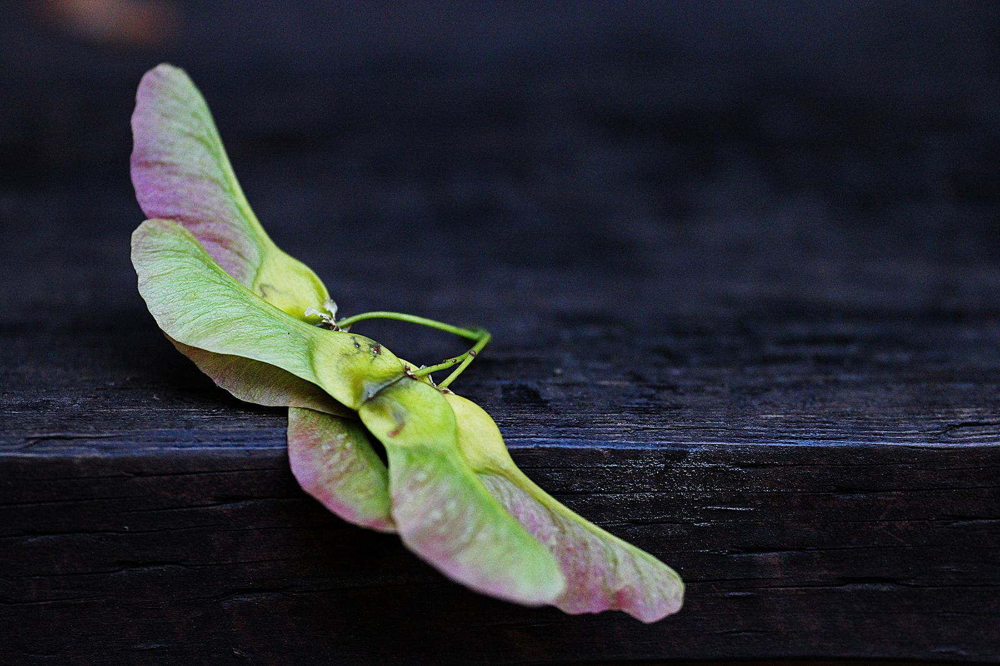
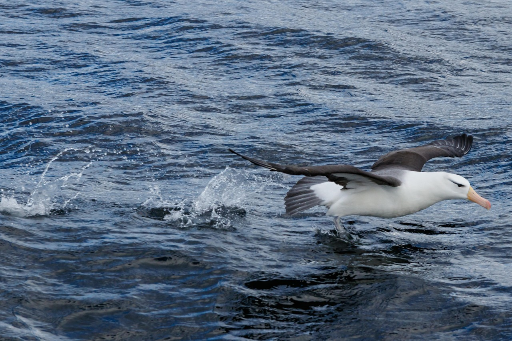

Capítulo 3
Los voladores de la naturaleza
Semillas, insectos, pterosaurios, aves y murciélagos: cómo evolucionó el vuelo y qué puede copiar el papel.
Los pioneros del vuelo, por orden de llegada.

3.1 Semillas que vuelan

Una planta no puede irse de casa andando. Por eso sus semillas vuelan.
Las semillas con alas están entre los voladores más antiguos de la Tierra. Hay semillas fósiles con tres o cuatro alas en rocas del Devónico tardío, de unos 360 a 385 millones de años1,2. Las semillas encontraron tres trucos, y los tres siguen funcionando hoy.
Girar. Suelta una semilla de arce y gira como la pala de un pequeño helicóptero. Un pequeño remolino se coloca en el borde delantero del ala que gira y casi duplica su sustentación. La semilla cae despacio y el viento la aleja del árbol3,4.
Paracaídas. Una semilla de diente de león cuelga bajo un penacho de unos 100 pelos finos. El penacho es hueco en más de nueve décimas partes y aun así se agarra al aire mejor que un disco macizo. El aire que se cuela por los huecos forma un anillo de aire en remolino que flota justo encima del penacho, sin tocarlo5.
Planear. Alsomitra macrocarpa, el pepino de Java, produce una semilla con un ala fina como el papel de unos 13 cm de ancho6. No gira. Planea, como un pequeño avión sin cola. Las personas la copiaron: mira «Copiado de la naturaleza», más adelante en este capítulo.
3.2 Los primeros animales voladores
Mucho antes que las aves, el cielo era de los insectos.
Imagina un cielo sin aves, sin murciélagos y sin reptiles voladores. Durante unos 100 millones de años estimación, las únicas alas animales fueron alas de insecto.
El fósil de insecto alado más antiguo y más aceptado tiene unos 325 millones de años. Es un insecto parecido a una efímera llamado Delitzschala bitterfeldensis7. Un estudio de los genes de los insectos sugiere que las primeras alas llegaron aún antes, hace unos 406 millones de años8.
Los fósiles más antiguos son difíciles de leer. Una mandíbula de unos 400 millones de años se tomó como señal de un insecto alado; un estudio de 2017 dice que quizá sea de un animal parecido a un ciempiés9,10. Un fósil del Devónico descrito como insecto en 2012 fue cuestionado al año siguiente11,12.
¿De dónde salieron las alas? Las aves y los murciélagos convirtieron un brazo en ala. Los insectos crearon algo nuevo, y los científicos llevan un siglo discutiéndolo13. Una idea: las alas nacieron de bordes planos de la espalda. Otra: de lengüetas de las patas, algo parecidas a las branquias de los insectos acuáticos.
Experimentos recientes con escarabajos y con un pequeño crustáceo parecido a una gamba apuntan a las dos a la vez. El ala pudo formarse donde una pieza de la espalda se unió a una pieza de una pata antigua14,15,16. Es la idea principal hoy, no la última palabra.
3.3 Grifínidos: los gigantes

Algunos insectos tuvieron alas más anchas que dos hojas de papel puestas una tras otra.
Hace unos 300 millones de años, los bosques pantanosos del carbón albergaban a los grifínidos, parientes de las libélulas actuales. Meganeura, hallado en Francia, tenía unos 70 cm de envergadura17,18.
El mayor insecto conocido, Meganeuropsis permiana, vivió algo después en lo que hoy es Kansas. Las fuentes dan una envergadura de 71 a 74 cm17,19.
¿Por qué tan grandes? Una idea famosa es el oxígeno. Los insectos respiran por una red de tubos diminutos, y el aire de entonces pudo tener hasta un 35 % de oxígeno, frente al 21 % actual20. Un aire más rico podía llegar más adentro de un cuerpo grande. Durante unos 150 millones de años, los insectos más grandes crecieron y menguaron al ritmo del oxígeno21.
Después el patrón se rompió. Tras la aparición de las aves, los insectos siguieron siendo pequeños aunque el oxígeno volvió a subir, quizá porque ya había quien los cazara en el aire21. Otros científicos señalan que los gigantes no tenían cazadores voladores, o creen que el oxígeno importaba sobre todo a los insectos jóvenes que vivían en el agua17,23. El oxígeno es probablemente parte de la historia, no toda22.
Las libélulas actuales son más pequeñas, pero vuelan de maravilla. Una libélula puede fijar el ángulo y la velocidad de cada una de sus cuatro alas, así que puede quedarse quieta, girar y volar en cualquier dirección24.
3.4 Pterosaurios
Los primeros animales con columna vertebral que volaron no eran aves ni dinosaurios.
Los pterosaurios eran reptiles voladores. El Museo de Historia Natural da unos 215 millones de años para los primeros en una página y 228 millones en otra, así que escribimos «de 215 a 228»25,26. Vivieron hasta hace 66 millones de años25. Sus parientes conocidos más cercanos, los lagerpétidos, eran pequeños reptiles corredores que no volaban28.
El ala de un pterosaurio era una piel fina extendida del brazo a la pata. Un dedo larguísimo sostenía su borde delantero25.
El mayor, Quetzalcoatlus, no deja de cambiar de tamaño. En 1975 su descubridor calculó una envergadura de 15,5 m29. Mejores huesos y mejores cuentas la rebajaron. Un estudio de 2010 consideró que 10 a 11 m y 200 a 250 kg son las estimaciones máximas más fiables30. Once metros son unas 37 hojas de papel puestas una tras otra estimación.
¿Cómo despegaba un gigante? Las aves saltan con las patas. Un estudio de 2008 propuso que los pterosaurios usaban las cuatro extremidades: se agachaban y saltaban por encima de sus alas plegadas, como un saltador con pértiga31,30. Un estudio de 2021 sobre Quetzalcoatlus aceptó que el despegue a cuatro patas era posible, pero pensó que un fuerte salto solo con las patas traseras también lo era32. La pregunta sigue abierta.
3.5 Primero plumas, después vuelo

Las aves son dinosaurios. Y los dinosaurios tuvieron plumas antes de que ninguno volara.
En 1996, científicos de China nombraron a Sinosauropteryx, un dinosaurio de 1 m cubierto de plumas finas como pelos. No podía volar33. Desde entonces han aparecido plumas en muchos dinosaurios.
Algunos eran enormes. Yutyrannus, primo de Tyrannosaurus de unos 9 m, llevaba plumas largas como hilos34,35. Hasta un herbívoro, Kulindadromeus, tenía filamentos parecidos a plumas hace unos 168 millones de años36,37. Primero llegaron las plumas; el vuelo, después.
Archaeopteryx vivió hace unos 150 millones de años; el museo da de 149 a 145 millones. Tenía el tamaño de una urraca, alas anchas con plumas, pero también dientes afilados y una larga cola de hueso. Todos los esqueletos proceden de canteras de caliza cerca de Solnhofen, en Alemania38.
¿Podía volar? El museo dice que nadie sabe si volaba del todo o solo planeaba38. Un estudio de 2018 sobre los huesos de su ala defendió que aleteaba39, y un estudio de 2025 halló plumas especiales en la parte interior del ala que sugieren que estaba hecho para volar40.
Otros dinosaurios con plumas probaron otras alas. Microraptor, hace unos 120 millones de años, tenía plumas largas en los brazos y en las patas: cuatro alas. Probablemente planeaba41,42.
3.6 Murciélagos: manos que vuelan

El ala de un murciélago es una mano, con piel entre los dedos.
Los murciélagos son los únicos mamíferos que vuelan de verdad. Hay más de 1400 especies de murciélagos, una de cada cinco especies de mamíferos43,49.
Su ala es una piel fina extendida sobre el brazo y cuatro dedos muy largos44. La piel está llena de sensores: pelos diminutos notan el aire que pasa45, y músculos finos como un pelo, dentro de ella, ajustan el ala en pleno vuelo46.
Los esqueletos de murciélago más antiguos hallados hasta ahora tienen unos 52 millones de años y proceden de Wyoming47,48. Un murciélago primitivo, Onychonycteris, ya podía volar, pero sus oídos sugieren que aún no se orientaba por el eco. Primero llegó el vuelo49.
Onychonycteris aún tenía garras en los cinco dedos y alas cortas y anchas. Quizá volaba alternando aleteo y planeo49.
3.7 Planeadores del bosque
Algunos animales nunca aletean. Saltan, se extienden y caen hacia delante a propósito.
El planeo ha evolucionado al menos seis veces por separado en los mamíferos50. Una ardilla voladora tiene un pliegue de piel con pelo desde la muñeca hasta el tobillo51. Un planeo habitual ronda los 10 m; desde un árbol alto y cuesta abajo puede llegar a unos 80 m52.
El colugo del sudeste asiático es un campeón. Se registró a un colugo de la Sonda planeando unos 145 m, más que un campo de fútbol53.
El lagarto Draco abre una piel sobre costillas largas y planea de árbol en árbol, normalmente unos 8 m cada vez54.
Las serpientes voladoras no tienen patas. La serpiente arborícola del paraíso salta, separa las costillas para aplanar el cuerpo y ondula por el aire55,56. La ondulación no es inútil: evita que la serpiente dé vueltas57. En pruebas desde una torre de 15 m, las serpientes llegaron hasta 24 m58.
3.8 Peces y calamares que vuelan
Algunos de los mejores planeadores viven en el mar.
Un pez volador sube a toda velocidad a la superficie, abre sus grandes aletas como alas y salta. Su cola sigue batiendo en el agua mientras despega, como un avión que corre por la pista59.
Ya en el aire, planea a ras de las olas. Volar cerca del agua reduce la resistencia, y sus aletas planean casi tan bien como las alas de algunas aves60. Enlazando planeos, tocando el mar y despegando de nuevo, un pez volador puede recorrer unos 400 m62.
El vuelo más largo jamás cronometrado duró 45 segundos. Un equipo de la televisión japonesa lo grabó desde un ferri en 200863.
Los calamares también vuelan. En 2013, científicos japoneses describieron calamares jóvenes de alta mar despegando del agua. Expulsaban un chorro de agua para despegar, abrían las aletas y la piel de los brazos como alas, planeaban y volvían a zambullirse64,65. Llegaron a 11,2 m por segundo, unos 40 km/h65 estimación.
3.9 Campeones del vuelo

El viaje más largo, el vuelo más largo sin parar, las alas más anchas.
El charrán ártico pasa el verano del norte en el Ártico y el verano del sur cerca de la Antártida. Diminutos rastreadores mostraron que algunos charranes vuelan más de 80 000 km en un año, unas dos vueltas a la Tierra66 estimación. A lo largo de su vida, un charrán puede volar unos 2,4 millones de km: tres viajes a la Luna y vuelta68,69.
La aguja colipinta no para nunca. En octubre de 2022, una aguja joven, conocida solo por el número de su marca, 234684, voló unos 13 560 km de Alaska a Tasmania en 11 días y 1 hora, sin parar a comer ni descansar72. En 2007, una aguja llamada E7 había volado 11 680 km hasta Nueva Zelanda70.
El albatros viajero tiene las alas más anchas de cualquier ave viva: unos 3,5 m, y 3,63 m el ave del récord, medida en 196574. Son unas doce hojas de papel puestas una tras otra estimación.
Casi no aletea. Cerca de las olas el viento es más lento; más arriba, más rápido. El albatros sube hacia el viento rápido, gira y baja, ganando velocidad en cada vuelta. Es el planeo dinámico75,76. Un cierre en el hombro mantiene las alas extendidas75. Albatros de cabeza gris han dado la vuelta al mundo, el más rápido en 46 días78.
3.10 Cómo vuela una mariposa
Una mariposa no vuela como un avión. Aplaude.
Cada otoño, las mariposas monarca de Canadá y del este de Estados Unidos vuelan al sur hasta unos pocos bosques de montaña de México. Algunas recorren hasta 3000 millas, unos 4800 km79. Las mariposas que hacen el viaje viven hasta ocho meses, mucho más que sus padres80.
¿Cómo lo consiguen unas alas tan delicadas? En un túnel de viento, unos científicos observaron mariposas vulcano entre hilos de humo. Usaban muchos trucos a la vez: remolinos de aire en el borde delantero del ala, aprovechar el aire que acababan de remover y dar palmadas con las alas81.
La palmada importa. Al subir, las alas flexibles se ahuecan y atrapan una bolsa de aire; luego se cierran de golpe y la expulsan hacia atrás como un chorro. Las alas flexibles hicieron ese empuje un 22 % más fuerte que unas rígidas82. El truco de la palmada y el despegue se describió por primera vez en una avispa diminuta en 197383.
Un ala que bate crea sustentación y también empuje, la fuerza hacia delante85. Un planeador solo cambia altura por distancia84. Las monarca mezclan las dos cosas, y aletear les cuesta mucho más: una estimación temprana lo pone en unas 28 a 31 veces la energía del planeo86. Las mariposas de este libro solo planean; tu lanzamiento es su único empuje87.
3.11 Copiado de la naturaleza

Las personas llevan más de cien años tomando prestadas las alas de la naturaleza.
Otto Lilienthal observó durante años gaviotas, garzas y cigüeñas, y hasta tuvo cigüeñas jóvenes en su jardín. En 1889 publicó un libro sobre el vuelo de las aves como base de la aviación, antes de volar sus propios planeadores88. Los hermanos Wright vieron a los zopilotes torcer las puntas de las alas para mantener el equilibrio, y torcieron las alas de su avión para hacer lo mismo89.
La semilla del pepino de Java voló hasta Austria. En 1897, el profesor alemán Friedrich Ahlborn escribió sobre ella como modelo para máquinas voladoras. Igo Etrich y Franz Wels construyeron un planeador sin cola con su forma. Después Etrich dio al ala de semilla un cuerpo y una cola: el Etrich Taube, o «paloma», probado por primera vez en abril de 191090,91.
Los ingenieros siguen copiando semillas. Lockheed Martin llamó Samarai a su dron giratorio de una sola ala, por las semillas de arce93. Chips con alas del tamaño de un grano de arena caen girando como semillas94. Sensores que viajan como semillas de diente de león pueden recorrer hasta 100 m con una brisa moderada95.
Y animales. Bat Bot, un robot de 93 g, vuela con alas finas de silicona como las de un murciélago96. El DelFly Nimble copia los giros rápidos de huida de la mosca de la fruta97. Las aletas curvadas hacia arriba en la punta de las alas de muchos aviones de pasajeros nacieron de un ingeniero de la NASA que pensaba en las puntas de las alas de las aves planeadoras98.
3.12 Tus voladores de papel

Tres modelos de este libro toman una idea de este capítulo.
La semilla de arce de papel, lámina F2, gira al caer, como la semilla de la primera sección. Es un diseño clásico y nuestra versión está aún sin medir.
Las mariposas, láminas B1 a B3, son planeadores experimentales con alas de monarca, de morfo y de macaón. Planean; no aletean. Son concepto hasta que una prueba de vuelo registrada diga otra cosa87.
El planeador de anillo, lámina F1, no tiene un gemelo animal que podamos documentar. Está aquí porque muestra que un ala no tiene por qué ser plana.